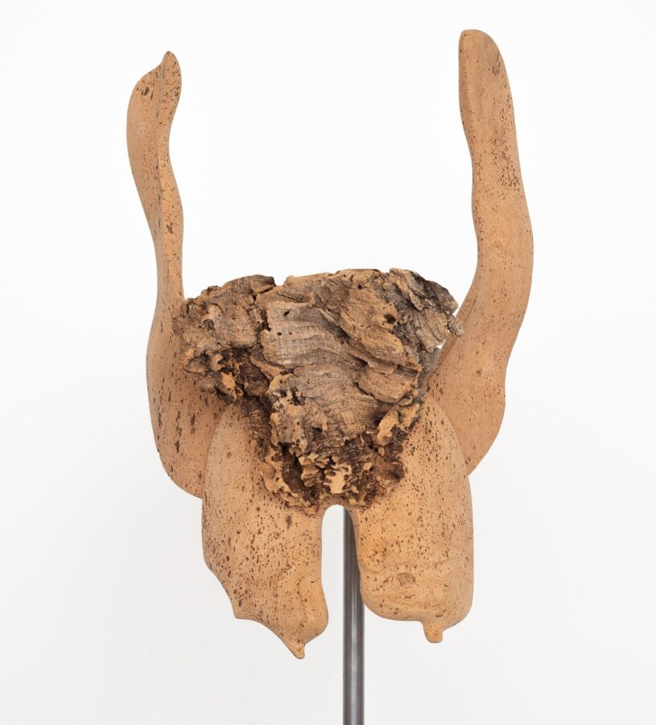

Lui Shtini: Capo Testa
With delight, Corbett vs. Dempsey presents Capo Testa, an exhibition of new sculptures and paintings by Lui Shtini. This is the artist’s fourth solo show at CvsD.
Inspired by a cape in Sardinia facing the Strait of Bonifacio, which Shtini has visited many times over the last ten years, Capo Testa is both a continuation and a point of departure. Shaped by sea and time, the cape’s boulders have captivated Shtini for years, conjuring imaginary environments populated by their own personnages and producing unique narratives. These scenarios, imbued with a kind of beautiful desolation, have prompted a series of new large-scale paintings, two of which are featured here. These works, fastidiously executed on aluminum, continue Shtini’s long-term interest in abstract landscape, but where earlier iterations often dealt with saturated color, here color has been evacuated, emphasizing instead line, volume, and composition, as the artist puts it, “making the delivery of the whole as a visual expression more immediate.”
These large, nearly monochromatic grey-and-white paintings compile and document the artist’s observations and emotions, and even contemporary events, culling them into stark posthuman snapshots. Shtini explains: “The compositions aren’t literal depictions of the above but are rather more abstract and open ended. As I am making them, they begin to crystallize as slowly revealed visions. A feeling of urgency pins down these visions in images. The images come together in a fluid and improvisational way, characteristic of my practice.”
As companions to the paintings, which operate in the space almost like stage sets, Shtini introduces a series of figurative, mask-like sculptures fitted to personally-designed metal mounts, either free-standing or wall-hanging. These sculptures, too, emerged from Shtini’s engagement with Sardinian landscape and the country’s cultural traditions. Composed of cork, a material abundant in Sardinia and central to the island’s culture and economy, they start in a rough state and proceed through a lengthy process of observation, alteration, and refinement, during which the persona inherent in the original material reveals itself by means of cutting, carving, sanding, and layering.
Shtini draws on Sardinia’s carnival tradition – a pagan celebration deeply rooted in the island’s mythology and the interconnectedness of human, animal, and nature. It is important to Shtini, who has always seen cork as a magical material, that these sculptures were created in proximity to the region where the cork used to make them was collected. Working closely with local harvesters to source irregular pieces that match his vision, Shtini has extended the intimate connection between material and place.
Shtini’s approach to sculpture mirrors his painting practice through improvisational methods and the use of traditional formats – portraiture, landscape, still life, and now the mask. In Capo Testa, for the first time these two worlds, which occupy different dimensions, collide in a haunting evocation where humanity is merely a trace, but the spaces of narrative persist.